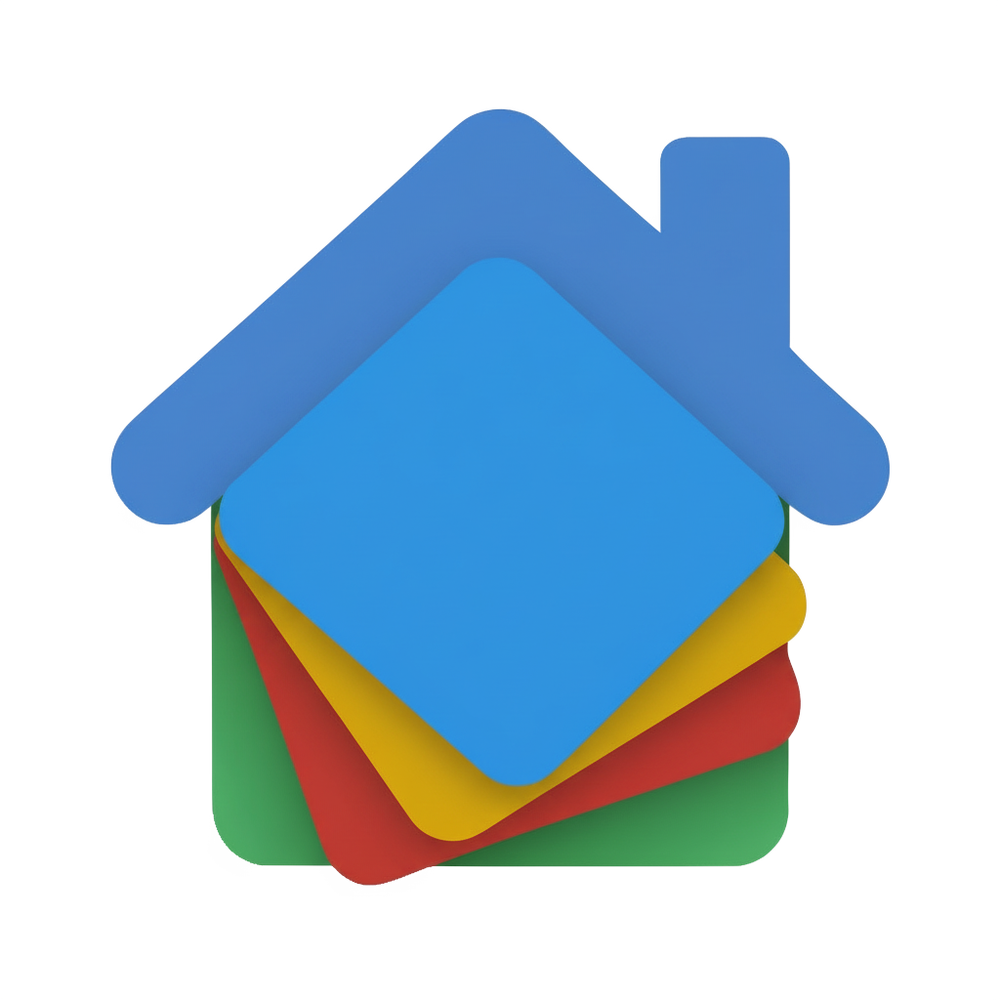

🏷️
Buy License
Buy Pro/Ultimate License
Visit
Material Home Component is a custom Home Assistant plugin designed to display your devices through interactive cards.
Featuring a modern and dynamic UI, the component provides real-time status updates (e.g., playing, idle) and detailed information on current media.
It also enables quick access to core functions, such as play/pause and volume adjustment, directly from your dashboard.
